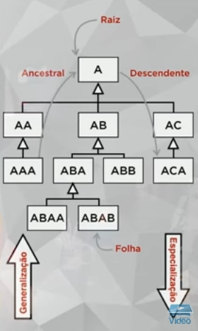
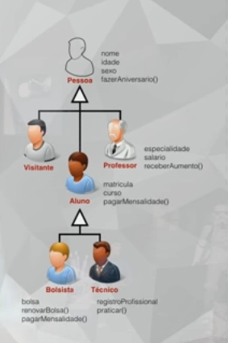
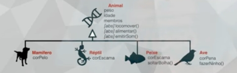
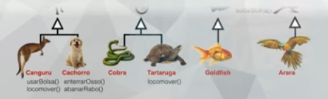

Sabendo o que é uma herança em POO, onde uma classe herda coisas de outra classe. A partir daí, podemos criar uma "árvore" de heranças, onde uma classe herda coisas de outras, veja o diagrama da árvore abaixo:
No caso, o AAA herda características de AA (mãe), e esta herda de A (avó). AAA tem tudo que tem AA e A. E AA tem tudo de A, e assim por diante. No caso acima, o ABAA herda das clases mãe, avó e bisavó. Em outras palavras, toda subclasse herda todos os conteúdos de suas ancentrais (mesmo se não tiverem totalmente disponíveis com visibilidades privadas e protegidas).
Toda classe que tem filhas é progenitora, independente dela ser a principal ou não. Superclasse sempre é a que está acima, e subclasse é sempre o que está abaixo (no exemplo acima, ABA é superclasse de ABAA e também subclasse de AB).
Como uma "árvore" mesmo de cabeça pra baixo, consideraremos que as classes que não tem filhas são como folhas, e a principal é a raiz. Vamos considerar que as filhas não são consideradas descendentes, e nem mães ancenstrais, vamos considerar a partir de netas/avós.
Quando corremos uma árvore de cima pra baixo, fazemos a especialização, de baixo pra cima é a generalização.
Veja o que faremos em Java abaixo:
Vamos usar a classe Pessoa como antes, mas deixe ela abstrata antes (colocando public abstract class Pessoa), e sem o construtor. A classe abstrata não pode virar um objeto (ser instanciada), apenas ser usada em heranças, se tentarmos criar Pessoa p1 = new Pessoa() agora, ela dará erro.
Crie a classe Visitante assim:
package faculdadepoo;
public class Visitante extends Pessoa {
}
Agora tente criar o objeto, assim:
package faculdadepoo;
public class FaculdadePoo {
public static void main(String[] args) {
Visitante v1 = new Visitante();
v1.setNome("Juvenal");
v1.setIdade(33);
v1.setSexo("M");
System.out.println(v1.toString());
}
}
Isso é o que chamamos de herança pobre, quando uma classe (classe filha Visitante) traz todas as heranças de outra classe (classe mãe Pessoa), mas não adiciona nada mais, mas pode virar objeto pela filha não ser abstrata. Pode ver que ele funciona normalmente, mas se usarmos o objeto Pessoa(), ele dará erro porque só pode ser usado para heranças.
Agora vamos usar a classe Aluno novamente, que terá a herança para diferença, por acrescentar algumas coisas. Substitua o CancelarMatr() por PagarMensal() e crie o getter e setter dele, assim:
public void pagarMensal() {
System.out.println("Pagando Mensalidade do aluno " + this.nome + ".");
}
PS: Pode ser necessário ir na classe Pessoa e colocar os atributos de privados para protegidos (aí você verá a diferença entre ambos).
E também o método toString assim:
@Override
public String toString() {
return "Aluno{" + super.toString() + "matr=" + matr + ", curso=" + curso + '}';
}
PS: O super executa um método na classe mãe, explicaremos ele mais pra frente.
E na classe principal, crie um objeto com Aluno, assim:
package faculdadepoo;
public class FaculdadePoo {
public static void main(String[] args) {
Aluno a1 = new Aluno();
a1.setNome("Sérgio");
a1.setIdade(16);
a1.setSexo("M");
a1.setMatr(1111);
a1.setCurso("Informática");
a1.pagarMensal();
}
}
Podem ver aí que ele herdou as características da superclasse Pessoa, mas ganhou novas características. Isso é a herança de diferença.
Agora criaremos uma classe filha de Aluno (e neta de Pessoa), que herdará características das classes mães e avós.
Esse é o código da classe Bolsista (que é um tipo específico de aluno):
package faculdadepoo;
public class Bolsista extends Aluno {
private float bolsa;
public void renovarBolsa() {
System.out.println("Bolsa Renovada!");
}
// Esse método substituirá o da classe Aluno somente nesse caso:
@Override
public void pagarMensal() {
System.out.println(this.nome + " é bolsista, então paga com desconto!");
}
@Override
public String toString() {
return "Bolsista{" + super.toString() + "bolsa=" + bolsa + '}';
}
public float getBolsa() {
return bolsa;
}
public void setBolsa(float bolsa) {
this.bolsa = bolsa;
}
}
E na classe principal colocamos algo assim:
public class FaculdadePoo {
public static void main(String[] args) {
Bolsista b1 = new Bolsista();
b1.setNome("Jubileu");
b1.setIdade(17);
b1.setSexo("M");
b1.setMatr(1112);
b1.setCurso("Administrador");
b1.setBolsa(12.5f);
b1.pagarMensal();
b1.renovarBolsa();
System.out.println(b1.toString());
}
}
Pode ver que a classe Bolsista herda coisas do Aluno, que herda de Pessoa.
PS: Caso não queira que um método seja sobreposto (substituído) por um descendente, coloque final antes da tipagem do método na classe mãe (no caso, Aluno), assim:
public final void pagarMensal() {
System.out.println("Pagando Mensalidade do aluno " + this.nome + ".");
}
O mesmo vale para classes:
public final class Aluno extends Pessoa {
}
Mas em ambos os casos, o final dará erro caso tentemos substituí-los nas subclasses. Por isso só use o final em classes folhas (que não terão filhas). O final também é usado em atributos no Java (como por exemplo final String CONSTANTE = "Dados", para exibir faça do mesmo modo, como por exemplo objeto.CONSTANTE e quando dentro da mesma classe, CONSTANTE sozinho).
Façam também, como exercício, as classes Professor, Técnico e as especializações de ambos.
Lembrando dos três pilares da POO, Encapsulamento, Herança e Polimorfismo (representados pelas letras EHP). Vamos tratar do último pilar que é o polimorfismo.
O nome é mais difícil do que o significado, pois polimorfismo significa "muitas formas". O polimorfismo permite que um mesmo nome represente vários comportamentos.
Para entendermos um caso, vamos supor um caso de quando acordamos, tem dia que acordamos rápido pra trabalhar, toma café, mas no Domingo demoramos mais, acordamos mais tarde e etc., em outras palavras, são várias formas de executar uma mesma função (no caso, um suposto método Acordar).
Para entendermos, um método tem "assinaturas", que consiste na quantidade e os tipos de parâmetros. Todo método podem receber ou não parâmetros, a quantidade deles identificam sua assinatura. Elas vem de heranças de classes.
Os dois tipos mais usados de polimorfismo são os de sobreposição e o de sobrecarga.
No exemplo, usaremos o polimorfismo de sobreposição (Override), que substitui um método que vem da classe mãe na classe filha.
Em outras palavras, sobreposição é o mesmo método e assinatura em classes diferentes.
Veja o diagrama que utilizaremos aqui:
Crie um novo projeto Java com classe principal e crie a classe Animal, com esse código:
package projetozoo;
public abstract class Animal {
protected float peso;
protected int idade;
protected int membros;
public abstract void locomover();
public abstract void alimentar();
public abstract void emitirSom();
public float getPeso() {
return peso;
}
public void setPeso(float peso) {
this.peso = peso;
}
public int getIdade() {
return idade;
}
public void setIdade(int idade) {
this.idade = idade;
}
public int getMembros() {
return membros;
}
public void setMembros(int membros) {
this.membros = membros;
}
}
PS: Teremos que colocar os métodos e a classe como abstratos, que significa que o método não será desenvolvido na classe Animal. Como acontecia com interfaces, é como um aviso pra essa classe que existe um método, mas ela não precisa e nem sabe como o código funciona na outra classe, apenas esta que tem que implementar (executar), lembrando que o abstract só vem indicado depois da visibilidade e antes de qualquer outra indicação (em classes abstratas sempre é necessário colocar abstract, as interfaces não precisam disso). Toda classe com algum método abstrato deverá também ser declarada abstrata. Lembrando que não é possível colocar métodos estáticos como abstratos, nem construtores ou destrutores (estes não existem no Java), e pelo mesmo motivo, não se pode colocar os mesmos em interfaces. Nem toda classe abstrata precisa ter métodos abstratos, mas os métodos abstratos só podem ser usados em classes também abstratas.
Crie a classe Mamifero:
package projetozoo;
public class Mamifero extends Animal {
private String corPelo;
@Override
public void alimentar() {
System.out.println("Mamando");
}
@Override
public void emitirSom() {
System.out.println("Som de Mamífero");
}
@Override
public void locomover() {
System.out.println("Correndo");
}
public String getCorPelo() {
return corPelo;
}
public void setCorPelo(String corPelo) {
this.corPelo = corPelo;
}
}
PS: Lembrando que no Java existe o @Override antes dos métodos sobrepostos.
O de Reptil:
package projetozoo;
public class Reptil extends Animal {
private String corEscama;
@Override
public void alimentar() {
System.out.println("Comendo Vegetais");
}
@Override
public void emitirSom() {
System.out.println("Som de Réptil");
}
@Override
public void locomover() {
System.out.println("Rastejando");
}
public String getCorEscama() {
return corEscama;
}
public void setCorEscama(String corEscama) {
this.corEscama = corEscama;
}
}
A de Peixe:
package projetozoo;
public class Peixe extends Animal {
private String corEscama;
@Override
public void alimentar() {
System.out.println("Comendo Substâncias");
}
@Override
public void emitirSom() {
System.out.println("Peixe não faz Som");
}
@Override
public void locomover() {
System.out.println("Nadando");
}
public String getCorEscama() {
return corEscama;
}
public void setCorEscama(String corEscama) {
this.corEscama = corEscama;
}
}
E a de Ave:
package projetozoo;
public class Ave extends Animal {
private String corPena;
@Override
public void alimentar() {
System.out.println("Comendo Frutas");
}
@Override
public void emitirSom() {
System.out.println("Som de Ave");
}
@Override
public void locomover() {
System.out.println("Voando");
}
public void fazerNinho() {
System.out.println("Construindo Ninho");
}
public String getCorPena() {
return corPena;
}
public void setCorPena(String corPena) {
this.corPena = corPena;
}
}
E na classe principal, crie alguns objetos, assim:
package projetozoo;
public class ProjetoZoo {
public static void main(String[] args) {
// Animal a = new Animal(); // Dará erro por ser abstrata.
Mamifero m = new Mamifero();
m.setPeso(33.5f);
m.locomover();
Ave a = new Ave();
a.locomover();
}
}
Esse é o conceito básico de polimorfismo de sobreposição. Como o locomover da classe Animal é abstrato, as classes filhas dele contém a mesma assinatura vindas de Animal (classe mãe), mas executam de formas diferentes. O uso de interfaces também é semelhante às classes abstratas e também é considerado um tipo de polimorfismo.
PS: O tipo também pode ser o da classe pai (abstrata ou não), assim como acontecia com as interfaces, mas a implementação não, em polimorfismo se usa muito isso (na verdade isso seria o polimorfismo de inclusão, seja com classe pai ou interface), no exemplo acima ficaria assim:
// Animal a = new Animal(); // Dará erro por ser abstrata.
Animal m = new Mamifero(); // Funciona normalmente.
m.setPeso(33.5f);
m.locomover();
Animal a = new Ave(); // Funciona normalmente.
a.locomover();
Nesse caso, mesmo o tipo sendo da classe abstrata, os métodos abstratos dela apenas farão a assinatura, já que serão executados os métodos das classes implementadoras dele. Lembrando que não conseguiremos acessar os métodos das classes filhas, como por exemplo o fazerNinho() da classe Ave.
Isso é útil para ganharmos em polimorfismo, onde podemos usar vários tipos de objetos em, por exemplo, parâmetros, desde que eles tenham a mesma interface ou classe pai em comum.
Mas vamos continuar o exemplo, criando animais específicos para as classes Ave, Mamifero, Peixe e Reptil. Veja o diagrama:
Veja por exemplo, a classe Canguru:
package projetozoo;
public class Canguru extends Mamifero {
@Override
public void locomover() {
System.out.println("Saltando");
}
}
A classe Cachorro:
package projetozoo;
public class Cachorro extends Mamifero {
@Override
public void emitirSom() {
System.out.println("Au! Au! Au!");
}
}
E a classe Tartaruga:
package projetozoo;
public class Tartaruga extends Reptil {
@Override
public void locomover() {
System.out.println("Andando bem Devagar");
}
}
No exemplo acima, podemos já colocar isso na classe principal:
package projetozoo;
public class ProjetoZoo {
public static void main(String[] args) {
// Animal a = new Animal(); // Dará erro por ser abstrata.
Animal m = new Mamifero();
m.locomover();
m.emitirSom();
Animal c = new Canguru();
c.locomover();
Animal d = new Cachorro();
d.emitirSom();
Animal r = new Reptil();
r.locomover();
Animal t = new Tartaruga();
t.locomover();
}
}
No polimorfismo, podemos sobreescrever um método numa subclasse caso ele tenha a mesma assinatura (por isso, no polimorfismo de sobreposição a herança é necessária).
Termine as outras classes, que serão usadas na próxima aula.
PS: Construtores também podem ser sobrepostos, usamos o super() dentro do construtor da classe filha para chamar o construtor da classe pai. E métodos e atributos estáticos de classes abstratas podem ser acessados, desde que estes sejam públicos e também não sejam abstratos, basta colocar algo tipo super.nomeDoMetodo().